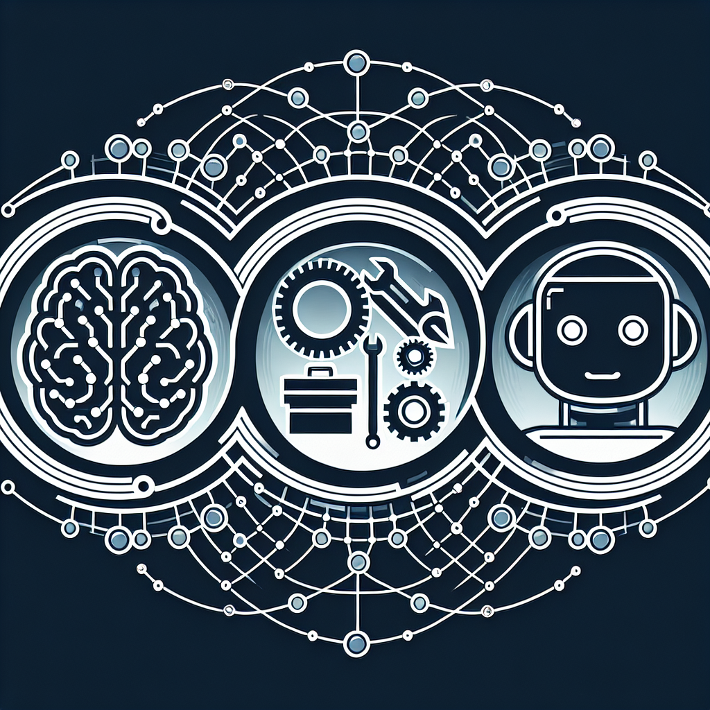
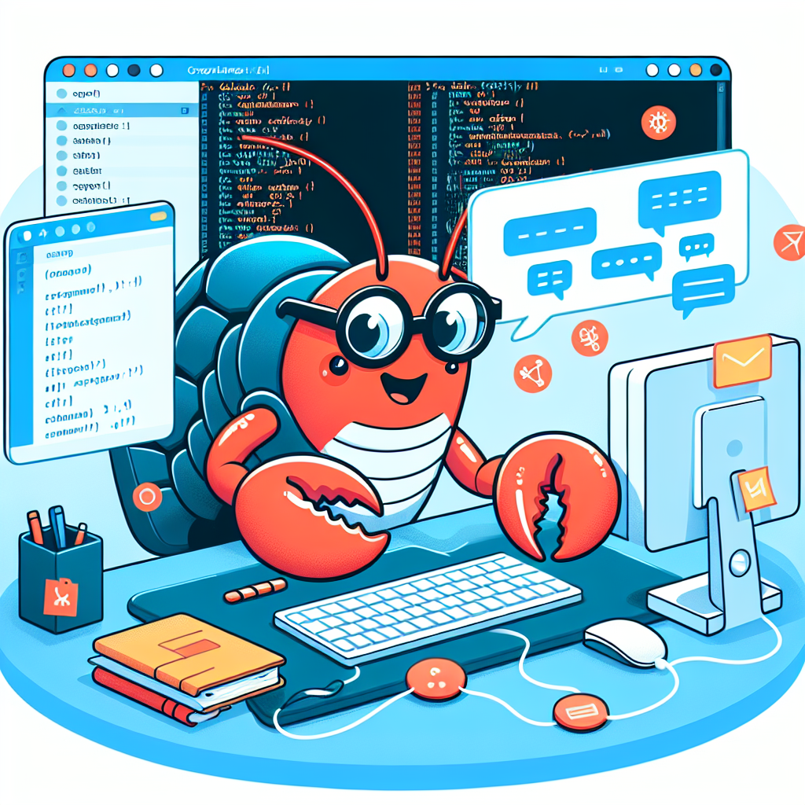

I lead a team of AI and Data architects at Salesforce. Which means I spend as much time explaining what AI actually does as I do building it. In boardrooms, on sales calls, in strategy sessions with Fortune 500 companies. And the questions I get most often aren't from any of those rooms. They're from friends, family, and people in my DMs who just want a straight answer without the jargon.
The same questions keep coming up, smart questions that people feel dumb asking because the tech world moves so fast.
Nobody should feel embarrassed for not keeping up. The pace of AI right now is genuinely absurd. New models drop weekly. Terms like "agentic AI" and "vibe coding" appear overnight and suddenly everyone's using them like they've existed forever.
So here's my attempt to explain what's actually happening, the same way I'd explain it to a smart person who doesn't live in this world. No jargon. No hype. Just straight answers.
1. LLMs 101: "What's the difference between ChatGPT, Claude, and those open-source things?"
First, let's clear up some confusion: ChatGPT isn't an LLM. It's a chat interface. The LLM (Large Language Model) behind it is called GPT.
What's an LLM? It's a massive neural network trained on vast amounts of text data. Think of it like a prediction engine: you give it text, it predicts what comes next. That's it. But when trained on the entire internet, books, code, and conversations, those predictions get eerily good at mimicking human language.
The revolution started quietly. OpenAI released GPT-3 in 2020. Impressive, but mostly limited to developers and researchers. Then in November 2022, they wrapped GPT-3.5 in a simple chat interface and called it ChatGPT. It hit 100 million users in two months, the fastest product adoption in history at the time.
That moment changed everything. Suddenly, AI wasn't a lab experiment. It was in your browser, answering questions, writing code, helping with homework. Google panicked and rushed out Bard (now Gemini). Anthropic launched Claude. Meta open-sourced Llama. Microsoft bet $13 billion on OpenAI. The AI arms race was on.
Now here's where it gets confusing: When people say "ChatGPT," they usually mean the chat app. When they say "GPT-4," they mean the underlying model. Same with Claude (the chat app) vs. Claude Sonnet/Opus (the models). This matters because the model is the brain; the interface is just how you talk to it.
Let's use restaurants as an analogy.
Foundation models (GPT, Claude, Gemini): Fine dining restaurants. You don't see the kitchen. You don't know the recipes. You just order and trust the chef. These are proprietary models built by OpenAI, Anthropic, Google. They're powerful, polished, but you're at their mercy for pricing, availability, and features.
Open-source models (Llama, Mistral, DeepSeek): Recipe books. Meta, Mistral, and others release their models publicly. You can download them, modify them, run them yourself. The catch? You need the "kitchen" (powerful hardware) and the skills to cook. Great for developers, not for most users.
Cloud vs. on-prem: Delivery vs. home cooking.
- Cloud (ChatGPT, Claude): You pay per use. They handle the servers, the updates, the scaling. Easy, fast, but you're sending your data to them.
- On-prem (running Llama locally): You run the model on your own servers. Full control, full privacy, but you pay upfront for hardware and maintenance.
Why would anyone run AI locally?
Privacy, security, customization. If you're a hospital handling patient data or a bank processing transactions, you don't want your data leaving your building. That's where on-prem models shine.
2. The Money Question: "How do these AI companies make billions if I use ChatGPT for free?"
Think of AI companies like gyms.
Free tier: Day pass. You can use ChatGPT for free, but there are limits. Slower responses, usage caps, no premium features. OpenAI is betting you'll eventually want more.
Paid subscriptions: Monthly membership. ChatGPT Plus ($20/month) gets you faster models, more usage, early access to new features. Millions of people pay for this. That's billions in recurring revenue.
Enterprise deals: Corporate wellness programs. Companies like Salesforce, Coca-Cola, and Morgan Stanley pay OpenAI millions to integrate AI into their workflows. Custom models, dedicated support, data privacy guarantees. This is where the real money is.
API access: Equipment rental. Developers pay per use to build AI into their own apps. Every time you use an AI-powered app (Notion, Grammarly, Jasper), the company behind it is paying OpenAI or Anthropic per API call. At scale, that's massive revenue.
The bottom line: Free users are the marketing. Paid users fund growth. Enterprise customers print money.
3. Agents Explained: "Why are AI agents suddenly everywhere?"
Here's the shift: ChatGPT is a conversation. AI agents are coworkers.
ChatGPT (AI assistant): You ask, it answers. It's like texting a really smart person. But every conversation starts fresh. It can't remember what you talked about yesterday, and it can't DO anything beyond talking.
AI agents: They remember you, access your files, run commands, and execute tasks. It's like hiring an intern who actually gets stuff done.
Three things agents need that assistants don't:
1. Memory.
Imagine hiring an assistant who forgets you every morning. Useless, right? Agents store context (your preferences, past conversations, project details) so they don't start from zero every time.
2. Tools.
A coworker who can only talk isn't much help. Agents need tools: access to your calendar, ability to send emails, permission to run code, search the web, edit files. That's the difference between "tell me how to do it" and "I'll do it for you."
3. Autonomy.
This is the big one. Traditional AI waits for your next instruction. Agents don't. You say "research competitor pricing and draft a report," then walk away. It figures out the steps, does the work, and pings you when it's done.
Why people are obsessed with agents:
They're the first AI that feels like it actually works. They live on your computer, access your files, run your tools, and remember context. They're not just smarter (they're useful).
4. Vibe Coding: "Wait, developers aren't writing code anymore?"
You might've seen the headline: "Spotify's top developers haven't written a line of code since December."
Let's unpack that.
What "vibe coding" actually means:
It's not "AI writes all the code and we hit publish." It's:
- Developer describes what they want ("build a feature that recommends playlists based on time of day")
- AI generates the code
- Developer reviews it, tests it, tweaks it, approves it
The analogy:
Before: You're a chef cooking from scratch.
Now: You're a chef using a sous-chef who preps everything. You still decide the flavor, check the quality, plate the dish. But you're not chopping onions anymore.
Does this mean developers are going away?
No. It means the job is evolving. Just like calculators didn't kill mathematicians, AI won't kill developers. It'll kill the boring parts (boilerplate code, repetitive tasks, syntax debugging).
What changes:
- Junior devs will need to learn how to "manage" AI code (review, test, integrate)
- Senior devs will focus more on architecture, design, and strategy
- Speed increases dramatically (what took weeks now takes days)
Why this freaks people out:
Because it's happening fast. Spotify's CEO bragging about it didn't help. But here's the truth: tools always change how we work. The people who adapt win. The people who resist get left behind.
5. The OpenClaw Phenomenon: "What is it and why does it matter?"
Last week, Peter Steinberger (OpenClaw's creator) joined OpenAI. If you're not in tech, that means nothing. If you are, it's like Linus Torvalds joining Microsoft.
So what is OpenClaw?
ChatGPT lives in your browser. You type, it responds. That's it.
OpenClaw lives on your computer. It can:
- Read and edit your files
- Run terminal commands
- Access your calendar and email (with permission)
- Execute multi-step tasks autonomously
- Remember everything between sessions
The analogy:
ChatGPT is like asking a librarian for help. OpenClaw is like giving the librarian a key to your house and asking them to organize your life.
Why this matters:
For the first time, AI isn't just answering questions (it's doing work). Need to analyze 50 spreadsheets and generate a report? OpenClaw can do it. Need to refactor your entire codebase? OpenClaw can do it. Need to schedule 20 meetings based on availability across time zones? OpenClaw can do it.
Why OpenAI cares:
They see the future: AI that doesn't just talk, but acts. OpenClaw proved the model works. Now OpenAI is betting billions on it.
The catch:
Giving AI access to your files, your commands, your system (that's scary for a lot of people). Security, privacy, trust. That's the next frontier.
Closing Thoughts
You don't need to understand how transformers work or what RLHF stands for. Nobody in a boardroom is going to quiz you on attention mechanisms. But understanding the difference between a model and an interface, between a chatbot and an agent, between cloud and local? That puts you ahead of most people making decisions about AI right now.
A few questions worth sitting with:
- What repetitive work am I doing that an AI agent could handle?
- Am I evaluating AI tools based on hype or based on what my team actually needs?
- Do I understand enough to push back when a vendor oversells?
If this was useful, send it to someone who could use a clear explanation. That's how we close the gap. Not with more jargon, but with fewer barriers to understanding.